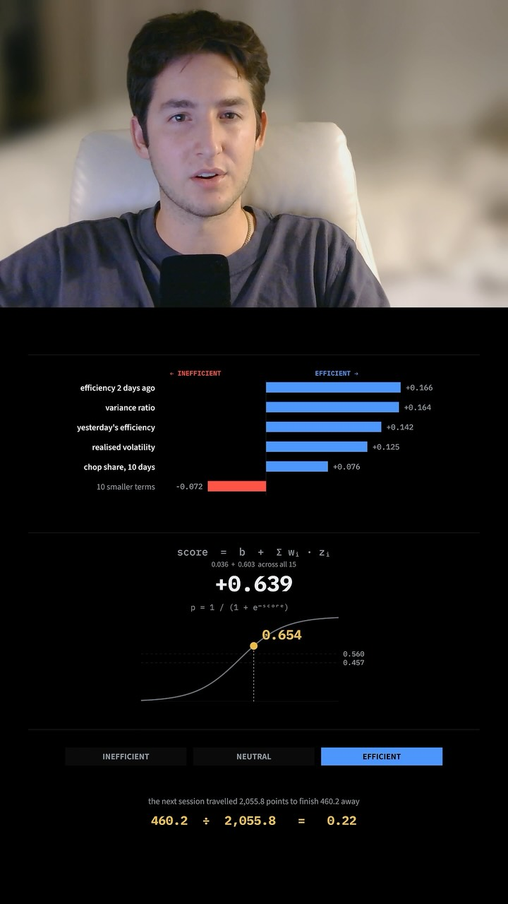
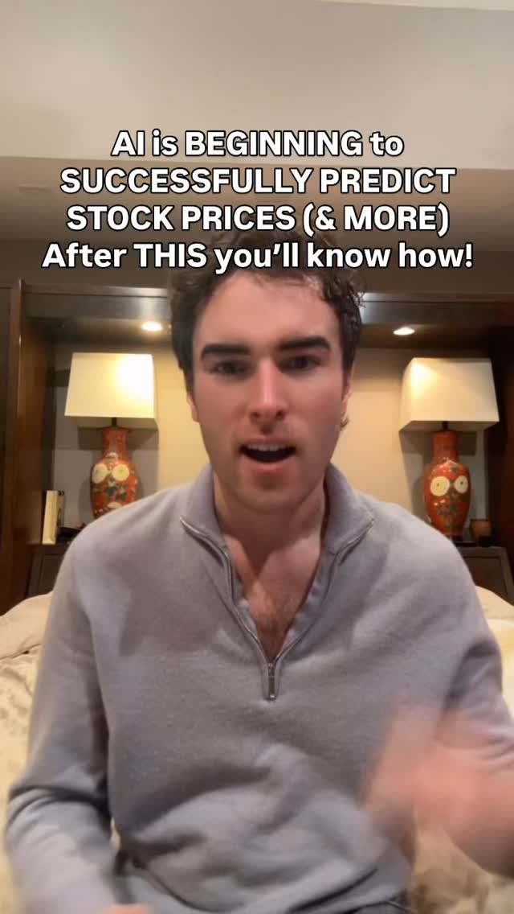
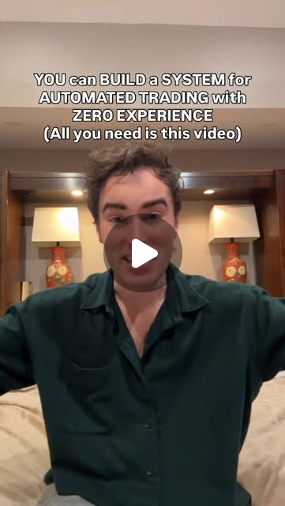
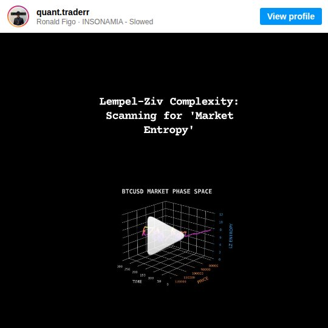
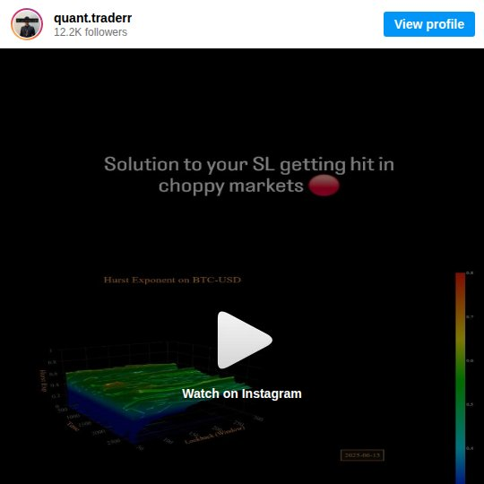
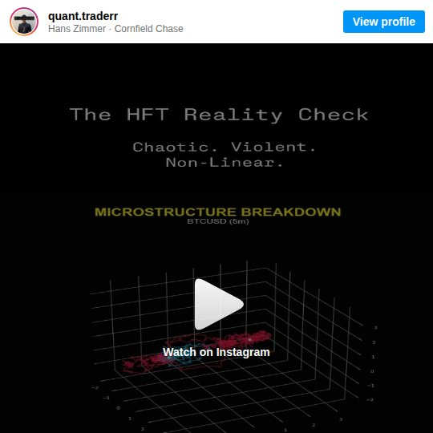
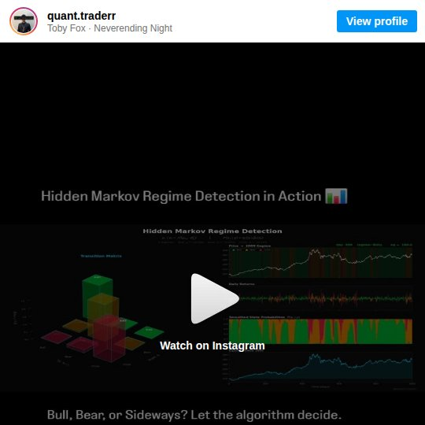
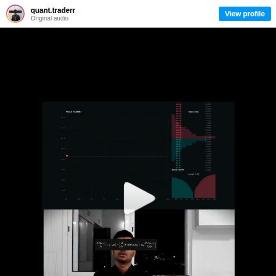

emergent_capability
Forecast the Weather, Not the Price — gating models by tradeability
Open candlestick foundation models like Kronos give you a forecast on every bar, and a hedge-fund stress test says it fails on many levels. A separate save shows the better question: a small logistic regression that predicts tomorrow's efficiency ratio (trend versus chop) and skips the choppy days lifted almost every metric over two years out of sample. Physics-flavored measures in the quant collection — Lempel-Ziv compressibility, Hurst exponent, Lyapunov exponent, hidden Markov regimes — are all measures of the same thing: is this market forecastable right now? Use them as a confidence gate on the foundation model, not as signals.
Claude · Hugging Face · Kronos · Python
Try It — Action Sketch
Run Kronos zero-shot on two years of hourly BTC and QQQ and log every forecast with its realized error., Compute rolling efficiency ratio, Lempel-Ziv complexity and Hurst for each bar, bucket bars into tradeability quintiles, and plot Kronos error per quintile., If error falls across quintiles, fit the efficiency-ratio-style logistic model to predict next-period tradeability and paper-trade Kronos only in the top bucket., falsifier: if Kronos error is flat across tradeability quintiles, the complexity measures say nothing about this model's skill and the gate is decoration.
Prerequisites: Python, Hugging Face access to the Kronos weights, GPU or patient CPU, Hourly or finer price history
Connected Posts (9)

Efficiency-ratio forecaster — skip choppy days to lift a strategy's metrics
Instead of predicting direction, a logistic regression on 15 price features forecasts the next day's Kaufman efficiency ratio (trendiness versus chop). Trades on predicted low-efficiency days made about a third of the money, so gating them out improved nearly every metric and held on two years of out-of-sample data.
Kronos — open-source foundation model trained on 12B candlesticks
Survey of zero-shot time-series foundation models (Google TimesFM 2.5, Amazon Chronos, Salesforce Moirai, IBM Tiny Time Mixers) that mostly fail at stock prediction, then Kronos: an open-source model pre-trained on about 12 billion K-lines from crypto and other markets that beats prior models on financial forecasting. Code on GitHub and Hugging Face from shiyu-coder.

Kronos — transformer that reads candlesticks as a language (part 3)
Final part of a Kronos explainer: after binary spherical quantization and hierarchical encoding turn candles into tokens, a transformer uses self-attention (query/key/value per candle) to weight relevant bars like a volume spike over chop, and an autoregressive decoder predicts the next tokens, i.e. future price action. Contrasts with sequential LSTMs.

Claude — I had my hedge fund team stress test Kronos. It failed on many levels.
This video is designed to make it so absolutely anyone can build their own automated AI system with Kronos integratio... — @gigaqian; uses Claude, Hugging Face; demonstrates code generation.

Lempel-Ziv Complexity — compression algorithms to detect market predictability
Applies the LZ compression algorithm (behind .zip files) to financial time series. When LZ complexity is low, patterns repeat and the market is more predictable. When high, it's random noise. Novel cross-domain application.

Hurst Exponent — 3D surface of BTC memory and mean-reversion zones
Plots the Hurst Exponent of BTC-USD as a 3D surface. H>0.5 = trending (momentum), H<0.5 = mean-reverting, H=0.5 = random walk. Shows how market 'memory' varies across timeframes. Basis for adaptive strategy selection.

Lyapunov Exponent — measuring chaos in BTC tick-level microstructure
Visualizes the Lyapunov Exponent of BTC-USD microstructure data. Positive exponent = chaotic/unpredictable, negative = deterministic. Reveals that what looks random on 5-min charts has measurable chaotic structure at tick level.

Hidden Markov Models — detecting market regime shifts automatically
Uses HMMs to mathematically deduce hidden market states from observable returns and volatility. Identifies low-vol bull, high-vol bear, and recovery regimes. Better than lagging indicators for strategy selection.

Tick Data vs OHLC — you're trading on 0.002% of available data
Daily OHLC candles compress ~86,400 seconds of market data into 4 numbers — throwing away 99.998% of information. Makes the case for tick-level and limit order book analysis over candle-based trading.
Deeper Dive generated 2026-10-21T18:20:58.219431 · Curated by Claude for Gabe (@6ab3) · dejaviewed.dev